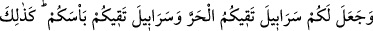
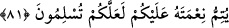

aydınlanmak için kullanırlar.” dediler. Efendimiz yine: “Hayır o, haramdır.” buyurdu.
[180]
Bu hayvanlardan ve onlara tâbi olan şeylerden insanlar yolculuk ve ikâmet
zamanlarında faydalandıkları gibi sâlik Allah’a seyr halinde hayvânî kuvvelerden ve
beş duyudan faydalanır. Çünkü bunlar onun için bir binektir. Dinlenme ve terbiye
maksadıyla durduğu vakit bunlar yardımcı vâsıtalar oldukları için zarûrîdir.
Kemâl Hocendî şöyle der:
Harâretle gidersin amma bu yola vâkıf olan şöyle dedi:
Acele giderek maksûda vâsıl olunmaz, teennî eyle bulursun.
81. Allah, yarattıklarından sizin için gölgeler yaptı. Dağlarda da sizin için
barınaklar yarattı. Sizi sıcaktan koruyacak elbiseler ve savaşta sizi koruyacak
zırhlar yarattı. İşte böylece Allah, müslüman olmanız için üzerinize nîmetini
tamamlıyor.
“Allah, yarattıklarından sizin için” sizin herhangi bir katkınız olmadan sıcaktan
gölgeleneceğiniz bulut, ağaç, dağ ve benzeri şeylerden “gölgeler yaptı.” Sıcak
memleketlerde genellikle hararet hüküm sürdüğü için Allah, bunları kullarına lütuf ve
ihsan olarak vermiştir.
“Dağlarda da sizin için” oturacak “barınaklar” sığınak, mağara ve vaha gibi
gölgelenme yerleri “yarattı.”
Atâ der ki: Kur’an onların bilgilerine göre nâzil olmuştur. Görmez misin Allah Teâlâ
“Dağlarda da sizin için barınaklar yarattı.” buyuruyor. Allah’ın ovalarda yarattığı
şeyler daha büyük ve daha çoktur. Ancak ne var ki onlar dağ ehli insanlardı.
“Sizi sıcaktan koruyacak elbiseler” yâni sizin için pamuk, keten, yün ve benzeri
şeylerden elbiseler yarattı. Âyette, soğuk zikredilmemiştir. Çünkü sıcağın zıddı olduğu
için ona delâleti açıktır. Ya da soğuk o bölgelerde az olduğundan onlar için önemli olan
zikredilmiştir. Rum diyarları ise böyle değildir. Oralarda soğuk daha çoktur. Bu yüzden:
‘Sıcak insana zarar verir, soğuk ise öldürür.’ denilmiştir. Şeyh Üftâde Efendi (k.s.) der
ki: “Bahar soğuğu zarar vermez. Ancak bu Arab diyarında böyledir. Çünkü bizim
memleketlerimizin aksine o diyarların soğuğu normaldir.”
Bir hadiste şöyle buyrulmuştur: “Baharın soğuğunu ganîmet bilin. Çünkü o,
ağaçlarda çalıştığı gibi sizin bedenlerinizde de çalışır. Sonbahar soğuğundan ise